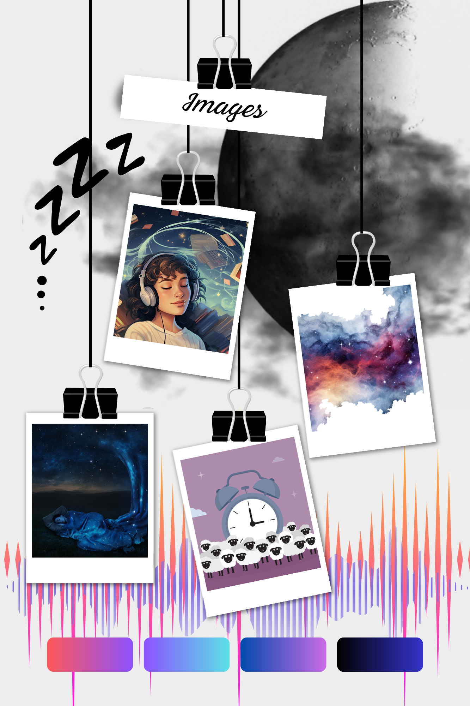

Week 6: Images & Multimedia
A. Analysing Digital Images
Establish your narrative and structure
Task 1: The stages of the creative process.
- Preparation: It involved the collection of materials (images, videos, quotes, audio materials, research about current
trends, website layouts, etc.) that could be used in the portfolio to boost my ideas. (Most of the collected items will not be
displayed in the final output)
- Incubation: Ideas come and go. It is worth taking notes or creating mood boards (more visual) where you can play with the elements
to finalise the outline or base of the design. It needs patience and time to play around. (layouts, positions, colour schemes)
- Ideation: It is when the outline is finalised, which I can work around. The way it is laid out is only playing with elements to make
it really pop for the audience. (For commissions, I usually presented three different base designs for the customer to choose from when I worked on the field.
This way, I could present their ideas my own interpretation, visualise different moods for the topic and provide the customer with
the freedom of choice. We also could make up a new design from the elements of the presented ones that we all agreed on.)
- Evaluation: Involves self-critic. The idea is one thing; the final representation is another! Things could go differently than
they would have been imagined initially, so adjustment is needed. Presenting a prototype for a wider audience could also help evaluate
and fine-tune the final output, as it could be evaluated from different perspectives.
- Implementation: Finalising everything and launch.
Task 2: Analyse the use of images on the web.
The article-type webpages mainly used one head image to align with the website's message.
- A: vector image – Quite simple design, resembles a 3D icon. There is a good contrast, small sizing, and much white space;
it informs about the content but doesn't provide any extra pop to the site's visual design.
- B: Raster image – It creates a pleasant rustic mood for the text that corresponds to the content of the text. Good-sizing,
eye-catching in its simple display. Less can be more!
- C: Mixture of the two – The creator displayed multiple images on the site with the same vector base but different finalisations
according to the content of the different sections presented under the images. It is quite simple and clever and provides a visual aid
for the audience to locate the offered websites to listen to audiobooks. Also, through its design, the first image plays with depth and
space, which is an eye-catching element as it slightly bothers the spectator's brain.
Explore the website!
Task 3: Generate a portfolio of images.

B. Lab works
Editing Digital Images
Task 1&2: Playing around with GIMP.
The examination of the first group revealed that the Indexed (bottom) optimisation degraded the quality of the image and lost its smoothness.
The borders among colour hues and shadowing are more distinctive (face). (Passable) I cannot discover any major difference between the
grayscale (top) and RGB (middle) images in quality; both could be displayed on websites depending on which style would be preferred.
However, too much enlargement could cause pixelation. In this case, RGB would be used. (Fine)
The second group change in resolution higher ppi (from left to right: 30ppi , 72ppi , 150ppi) means more pixels in an inch which means
higher quality in an image. Going too low degrades the image quality. However, in this case, I cannot see any visual difference between
the images after enlarging and examining them; I wonder if I exported something wrongly or the dark image was not the best idea to for it.
72ppi is optimal.
In the last group, the difference in size is relatively straightforward. Depending on what will be the images’ purpose
(background or inner decorative element), the size can be changed accordingly. However, if it is too small, the quality and
details of the image get degraded. (Right: Large – background – Fine / Left: Small – Inferior)
Task: Independent work - Eureka moment!
I also got carried away and started to design the background of the finalised website.
I came up with two different but corresponding design ideas. One for daytime and another for nighttime.